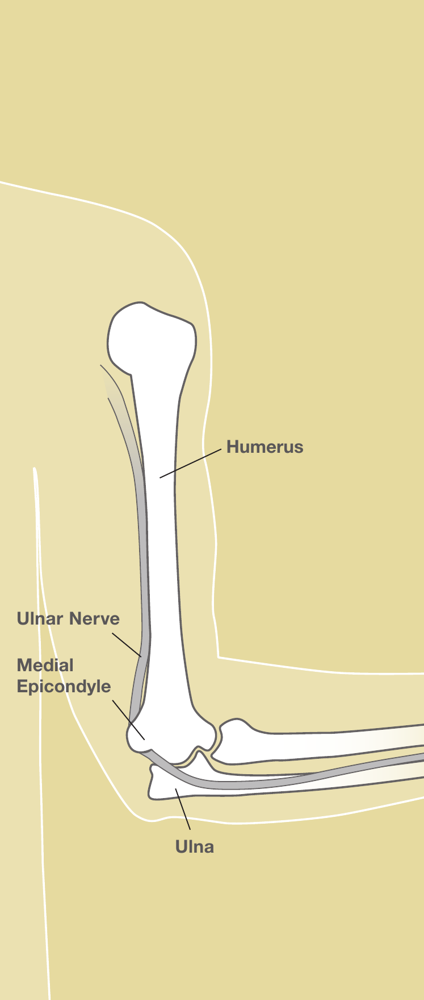

Condición
Síndrome del Túnel Cubital
Compresión del nervio "del hueso de la risa" en el codo. Causa entumecimiento en los dedos anular y meñique y puede debilitar la mano.

Illustration © American Society for Surgery of the Hand
¿Qué es el síndrome del túnel cubital?
El nervio cubital baja desde el cuello por el brazo y pasa por detrás del lado interno del codo a través de un túnel estrecho llamado el túnel cubital. Es el nervio que siente cuando se golpea el "hueso de la risa". Cuando el túnel está apretado o el nervio se estira, aparecen entumecimiento, hormigueo y debilidad en la mano.
Síntomas comunes
- Entumecimiento u hormigueo en los dedos anular y meñique
- Síntomas que empeoran cuando el codo está doblado, por ejemplo al sostener el teléfono o al dormir
- Dolor sordo en el lado interno del codo o del antebrazo
- Debilidad de agarre, dificultad para separar los dedos o para cruzarlos
- Pérdida de masa muscular entre el pulgar y el índice en casos de larga duración
¿Por qué ocurre?
Doblar el codo estira el nervio cubital y estrecha su túnel. Cualquier cosa que mantenga el codo doblado por mucho tiempo, o presión directa en el lado interno del codo (como apoyarse en un escritorio o apoyabrazos), puede causar síntomas. Algunas personas tienen una anatomía en la que el nervio se sale de lugar al doblar el codo, lo que lo irrita con el tiempo.
Opciones de tratamiento
Tratamiento no quirúrgico
- Cambios de actividad. Evitar apoyarse en el lado interno del codo. Usar auriculares en vez de sostener el teléfono en la oreja.
- Férula nocturna o almohada para el codo. Una férula suave o una toalla envuelta alrededor del codo lo mantiene mayormente recto durante el sueño. Esto solo resuelve los síntomas para muchas personas.
- Terapia. Ejercicios de deslizamiento del nervio y cambios de postura pueden ayudar en casos tempranos.
Tratamiento quirúrgico
- Liberación del túnel cubital. Una cirugía ambulatoria corta libera el tejido apretado sobre el nervio en el codo.
- Transposición del nervio cubital. En algunos pacientes se mueve el nervio al frente del codo para que no se estire al doblarlo. El Dr. Barrera discutirá qué opción se adapta a su anatomía.
Qué esperar en su visita
El Dr. Barrera examinará su codo y su mano, probará la sensibilidad y la fuerza, y buscará pérdida muscular. La mayoría de los pacientes se somete a un estudio de conducción nerviosa (EMG) para confirmar el diagnóstico, medir la severidad y descartar compresión en otro punto del nervio. A veces las imágenes son útiles si hubo una lesión previa del codo.
Llámenos si su agarre se está debilitando rápido, si nota que los músculos de la mano empiezan a perder volumen, o si no puede juntar los dedos. La compresión nerviosa severa de larga duración es más difícil de revertir, por eso el tratamiento temprano suele funcionar mejor.
¿Preguntas?
Llame a su consultorio para preguntas no urgentes:
- NYU Langone Laurelton · 646-501-4950
- NYU Orthopedic, Woodside · 929-429-3222
- NYU Orthopedic, Richmond Hill · 718-206-6923
- Jamaica Hospital Ambulatory Care Center (ACC) · 718-301-0720
Consulte la información de nuestras oficinas para direcciones y números de fax.